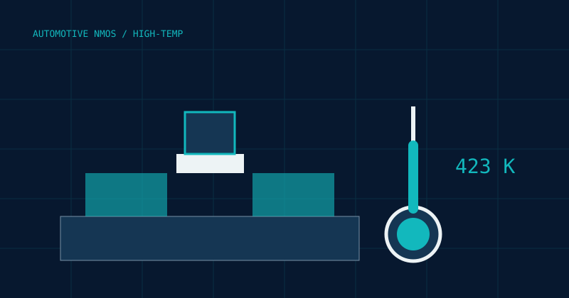
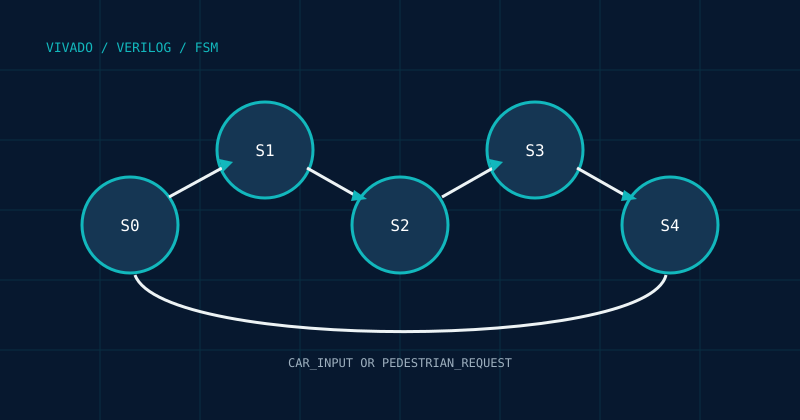

데이터분석준전문가
한국데이터산업진흥원 · 2026.03.06
MATERIALS · PROCESS · DEVICE
Materials & Semiconductor Engineering
Semiconductor Process · Device Simulation · Data Analysis
반도체 공정과 소자 특성을 분석하고, 데이터와 시뮬레이션을 통해 공정 최적화 방향을 탐구합니다.
01 PROCESS-TO-PERFORMANCE
01 / ABOUT
신소재공학의 재료 이해와 차세대반도체공학의 공정·소자 관점을 연결합니다.
반도체 공정, 소자 시뮬레이션, 첨단 패키징, 데이터 분석에 관심을 두고 공정 조건과 물리적 특성의 관계를 정량적으로 해석하고 있습니다.
한국데이터산업진흥원 · 2026.03.06
Adobe · 2022.06.14
02 / PROJECTS
핵심 내용은 간결하게, 공정 조건과 기술 문서는 각 GitHub 저장소에 상세히 기록했습니다.
Sentaurus TCAD로 NMOS 성능을 최적화하고 SimpleMOS 기준 공정을 PMOS로 변환해 5개 공정 변수를 분석한 개인 프로젝트입니다.
KEY RESULT 교과목 내 NMOS 최적화 콘테스트 공동 1위. Ion/Ioff 6.186 × 10¹¹, SS 82.953 mV/dec. PMOS 설계 목표 3종 충족.
VIEW TECHNICAL REPOSITORYBCAT DRAM의 trench corner 고전계와 BTBT로 발생하는 GIDL 누설을 줄이기 위한 장기 공정·소자 최적화 프로젝트입니다.
CURRENT MILESTONE MEB depth를 설계 변수로 확장하고 Cov–GIDL 상관관계를 분석하는 시뮬레이션 환경 및 모델 검증 단계.
VIEW TECHNICAL REPOSITORY62,199건의 공학 논문에서 반도체 및 공정 논문을 단계적으로 분류하고, Photolithography와 Advanced Packaging 연구 흐름을 분석했습니다.
KEY DECISION 일반 단어로 인한 false positive를 확인한 뒤 분류 전략을 포토·첨단 패키징 중심으로 전환.
VIEW TECHNICAL REPOSITORYSE 단독 역모델링의 파라미터 상관성 한계를 분석하고, XRR의 구조적 제약조건으로 초박막 해의 물리적 신뢰도를 높이는 접근을 발표했습니다.
KEY INSIGHT 낮은 fitting error만으로 물리적 타당성을 보장할 수 없으며, 독립적인 계측 정보를 결합해야 파라미터 모호성을 줄일 수 있음.
VIEW PRESENTATION PDFSELECTED COURSEWORK

팀장으로서 423 K, 0.12 μm NMOS의 Halo·LDD·P-well 순차 최적화를 이끌었습니다.
RESULT Ioff 약 7 orders 감소, Ion/Ioff 23 → 1.39 × 10⁸.
VIEW REPOSITORY
기존 FSM의 상태 추가 없이 보행자 요청 입력과 대기 LED 피드백을 통합했습니다.
RESULT 차량·보행자 입력에 대한 동일 신호 전환 시퀀스를 시뮬레이션으로 검증.
VIEW REPOSITORY03 / RESEARCH & PRESENTATION
2026 SUMMER ANNUAL CONFERENCE OF ISE · SPECIAL SESSION
박막 두께, 광학상수 n·k, 계면 거칠기 사이의 강한 상관성 때문에 서로 다른 구조가 유사한 SE 신호를 만들 수 있다는 한계를 분석했습니다.
역모델링 과정의 parameter correlation과 해의 모호성 확인
구조·밀도·거칠기 정보를 고정값 또는 제약조건으로 반영
ALD High-k 초박막 해석의 물리적 타당성 개선 방향 제안


04 / SKILLS
05 / EXPERIENCE
DATA LEADERSHIP
공정·회로 팀의 역할과 주차별 분석 목표를 조정하고, false positive 검증 결과에 따라 분석 전략을 재설계해 최종 결론을 통합했습니다.
TEAM OPERATIONS
4년간 활동하며 임원 및 공연 팀장으로 1년간 재임했습니다. 정기공연 5회, 대학 축제 1회, 새내기 배움터 1회 등 총 7개 무대의 세팅·일정·현장 운영을 총괄했습니다.
ACTIVITY RECORDTECHNICAL TRAINING · SCHEDULED
차세대반도체학과 주관 교육으로, 공정 시뮬레이션(7.20–7.22)과 NMOS/CMOS·SCE·DRAM·Flash 소자 시뮬레이션(7.24–7.29)을 다룹니다.
06 / CONTACT